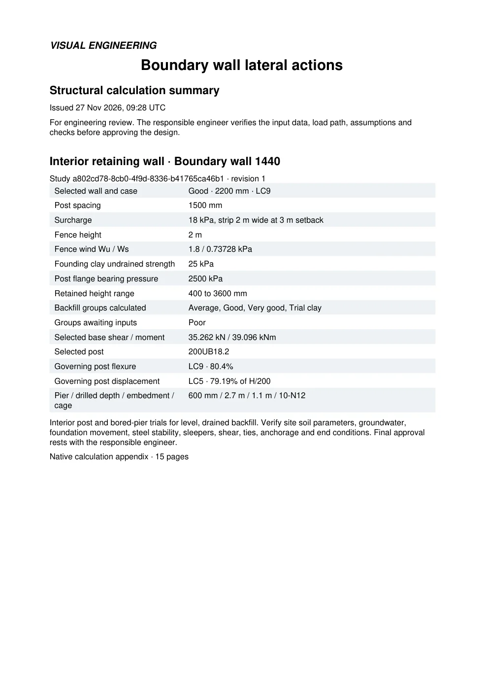

Strip surcharge behind a retaining wall
This worked example uses a 2.2 m interior retaining wall, posts at 1.5 m centres and an 18 kPa strip surcharge beginning 3 m behind the wall. The fence is 2 m high.
Trace the soil, surcharge and fence-wind contributions to the post base. Review LC9 as a full simultaneous comparison envelope and check the governing post displacement, clay depth and trial reinforcement.
Loading the report…
